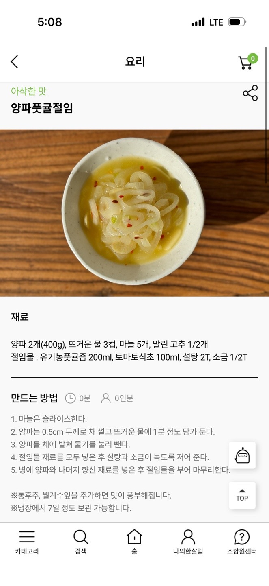

양파풋귤절임
먼저 텍스트 레시피를 읽고, 마지막에 영상/블로그/이미지를 확인하세요.
재료
- 양파 2개 (400g)
- 뜨거운 물 3컵
- 마늘 5개
- 말린 고추 1/2개
- 유기농 풋귤즙 200ml
- 토마토식초 100ml
- 설탕 2T
- 소금 1/2T
조리과정
- 마늘은 슬라이스한다.
- 양파는 0.5cm 두께로 채 썰고 뜨거운 물에 1분 정도 담가 둔다.
- 양파를 체에 밭쳐 물기를 눌러 뺀다.
- 절임물 재료를 모두 넣은 후 설탕과 소금이 녹도록 저어 준다.
- 병에 양파와 나머지 향신 재료를 넣은 후 절임물을 부어 마무리한다.
이미지
